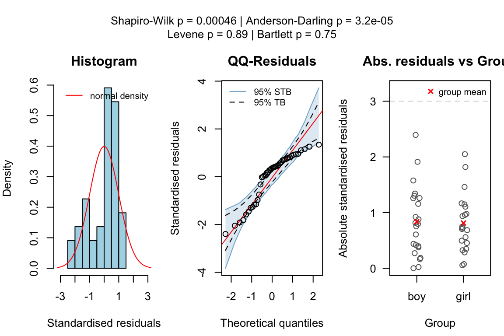
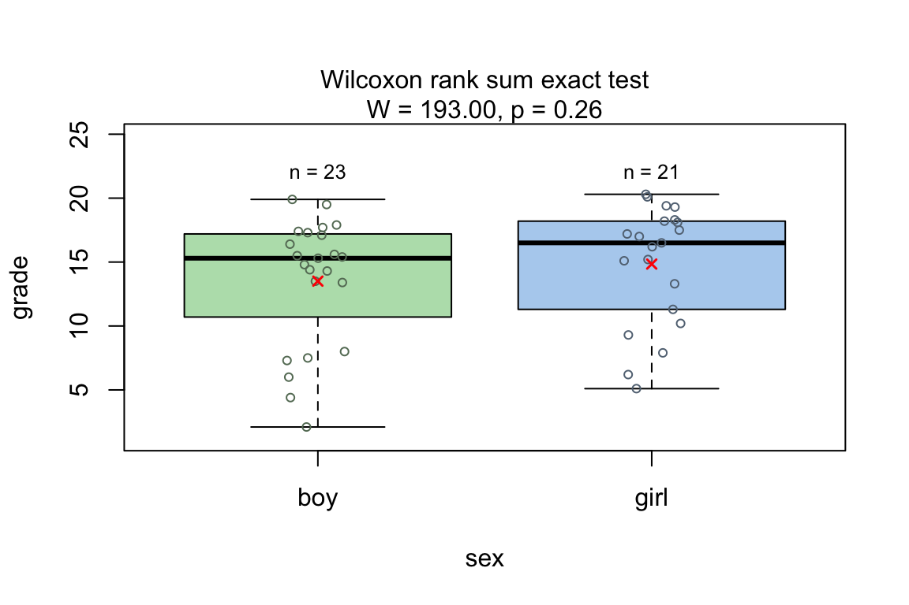
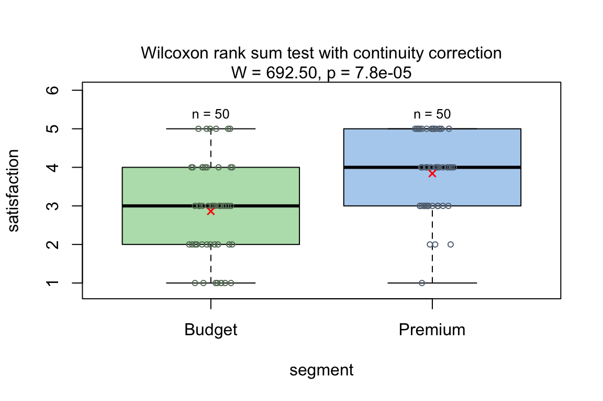
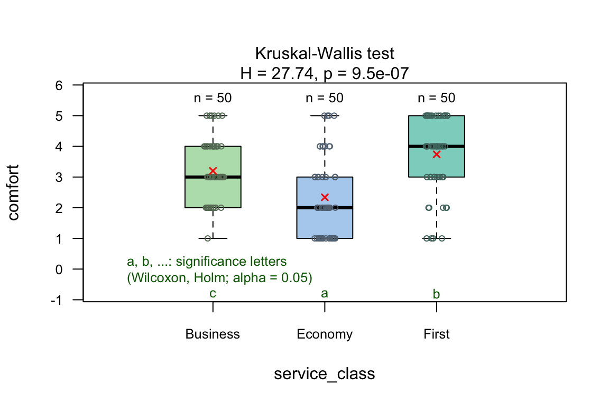
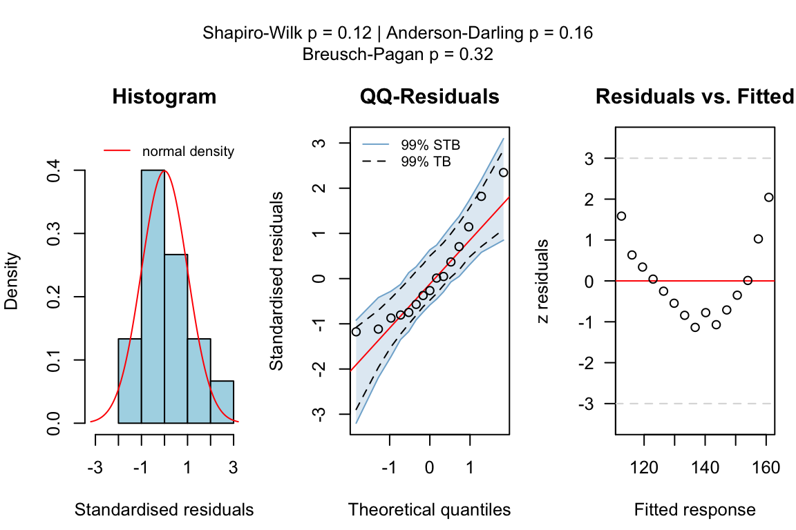
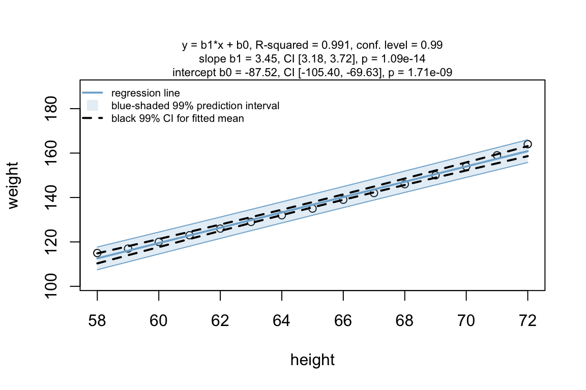
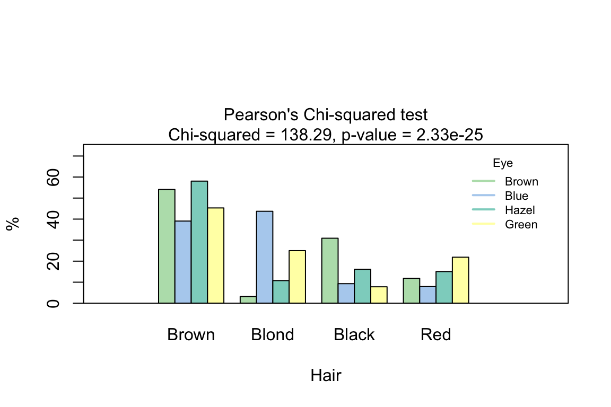
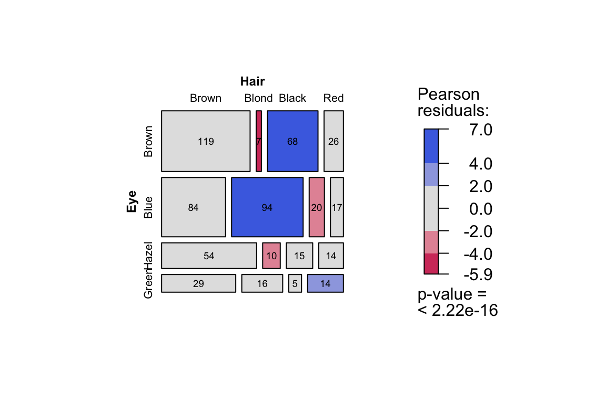
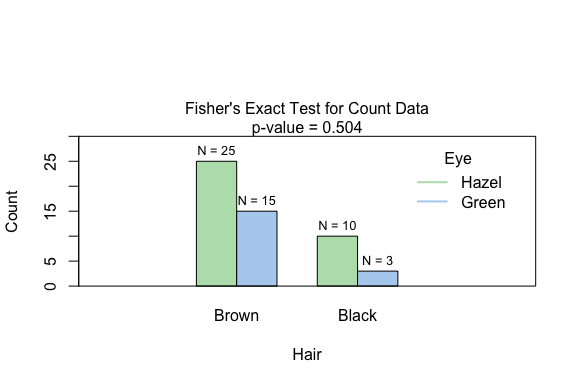
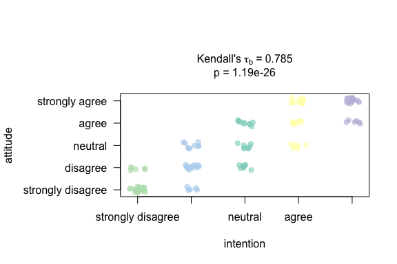

Purpose
visStatistics is an R package for automated statistical test selection and visualisation. It selects appropriate hypothesis tests for pairs of variables (integer, numeric, or factor), runs the analysis, and produces annotated, publication-ready plots.
The package was originally developed for researchers who could not directly access sensitive data but needed to perform visualisations and statistical analyses of selected groups via a web interface connected to a protected database — a setting that required a fully automated workflow. The same automation makes it useful in time-constrained contexts such as statistical consulting, where it reduces effort spent on test selection and leaves more room for interpretation. The package covers most hypothesis tests taught in undergraduate statistics.
Installation of latest stable version from CRAN
1. Install the package
install.packages("visStatistics")Installation of the development version from GitHub
1.Install devtools from CRAN if not already installed:
install.packages("devtools")3. Install the visStatistics package from GitHub:
pak::pak("shhschilling/visStatistics")6. Study all the details in the packages’ vignette:
vignette("visStatistics")Getting Started
The function visstat() accepts input in three ways:
# Standardised form:
visstat(x, y)
# Formula interface:
visstat(y ~ x, data = df)
# Backward-compatible form:
visstat(dataframe, "namey", "namex")In the standardised form, x and y must be vectors of class "numeric", "integer", or "factor".
In the formula interface, the formula y ~ x specifies the response y and predictor x variables, and data is a data frame containing these variables.
In the backward-compatible form, "namex" and "namey" must be character strings naming columns in a data.frame named dataframe. These column must be of class "numeric", "integer", or "factor". This is equivalent to writing:
visstat(dataframe[["namex"]], dataframe[["namey"]])To simplify the notation, throughout the remainder, data of class numeric or integer are both referred to by their common mode numeric, while data of class factor are referred to as categorical.
The interpretation of x and y depends on their classes:
If one is numeric and the other is a factor, the numeric must be passed as response
yand the factor as predictorx. This supports tests for central tendencies.If both are numeric, a simple linear regression model is fitted with
yas the response andxas the predictor.If both are factors (and not both ordered), a test of association is performed (Chi-squared or Fisher’s exact). The test is symmetric, but the plot layout depends on which variable is supplied as
x.If both are factors and
yis additionally of classordered, a non parametric test is performed: a Wilcoxon test in the case of two factor levels inx, a Kruskal-Wallis-Test for more than two factor levels inx.If both
xandyare of classordered, the order of the levels carries information that Chi-squared / Fisher would discard.visstat()instead tests for a monotone association via Kendall’s (cor.test(..., method = "kendall")) and visualises the relationship with a jittered rank–rank scatter plus a mosaic plot.
Decision logic
The choice of statistical tests depends on whether the data of the selected columns are numeric or categorical, the number of levels in the categorical variable, and the distribution of the data.
For a detailed description of the underlying decision logic, please refer to the package vignette:
vignette("visStatistics")Below figure gives a graphical overview of the main tests implemented.

Overview of the implemented statistical tests based on the class of the variables.
A graphical summary of the decision logic used for categorial predictors and numerical responses resulting in tests of central tendencies is given in below figure:

Comparing central tendencies: Decision tree used to select the appropriate statistical test for a categorical predictor and numeric response, based on the number of factor levels, normality, and homoscedasticity.
Examples
Numerical response and categorical predictor
When the response is numerical and the predictor is categorical, test of central tendencies are selected.
Wilcoxon rank sum test
grades_gender <- data.frame(
sex = factor(rep(c("girl", "boy"), times = c(21, 23))),
grade = c(
19.3, 18.1, 15.2, 18.3, 7.9, 6.2, 19.4, 20.3, 9.3, 11.3,
18.2, 17.5, 10.2, 20.1, 13.3, 17.2, 15.1, 16.2, 17.0, 16.5, 5.1,
15.3, 17.1, 14.8, 15.4, 14.4, 7.5, 15.5, 6.0, 17.4, 7.3, 14.3,
13.5, 8.0, 19.5, 13.4, 17.9, 17.7, 16.4, 15.6, 17.3, 19.9, 4.4, 2.1
)
)
wilcoxon_statistics <- visstat(grades_gender$sex, grades_gender$grade)

Ordered response and categorical predictor:
A response variable of classes ordered and factor is internally transformed to a numeric response and Wilcoxon test is performed for a predictor with two classes, otherwise a Kruskal-Wallis-Test.
Wilcoxon with ordinal response
set.seed(123)
# Create predictor: Customer segment (2 groups)
segment <- factor(rep(c("Budget", "Premium"), each = 50))
# Create response: Likert scale ratings (1-5)
satisfaction_numeric <- c(
sample(1:5, 50, replace = TRUE, prob = c(0.15, 0.25, 0.30, 0.20, 0.10)), # Budget
sample(1:5, 50, replace = TRUE, prob = c(0.05, 0.10, 0.20, 0.35, 0.30)) # Premium
)
# Create dataframe with ORDERED response
survey_data <- data.frame(
segment = segment,
satisfaction = ordered(satisfaction_numeric) # Declare as ordered
)
# triggers warnings and use Wilcoxon test
result <- visstat(survey_data$segment,survey_data$satisfaction)
Kruskal-Wallis test
set.seed(123)
# Create predictor: Service class (3 groups)
service_class <- factor(rep(c("Economy", "Business", "First"), each = 50))
# Create response: Likert scale ratings (1-5)
comfort_numeric <- c(
sample(1:5, 50, replace = TRUE, prob = c(0.35, 0.30, 0.20, 0.10, 0.05)), # Economy
sample(1:5, 50, replace = TRUE, prob = c(0.10, 0.20, 0.35, 0.25, 0.10)), # Business
sample(1:5, 50, replace = TRUE, prob = c(0.05, 0.10, 0.20, 0.30, 0.35)) # First
)
# Create dataframe with ordered response
flight_data <- data.frame(
service_class = service_class,
comfort = ordered(comfort_numeric) # Declare as ordered
)
# triggers warning and uses Kruskal-Wallis test
result <- visstat(flight_data$service_class, flight_data$comfort)
Numerical response and numerical predictor: Linear Regression
vis_women <- visstat(women$height, women$weight,conf.level=0.99)

Pearson’s Chi-squared test
Count data sets are often presented as multidimensional arrays, so - called contingency tables, whereas visstat() requires a data.frame with a column structure. Arrays can be transformed to this column wise structure with the helper function counts_to_cases():
hair_eye_color_df <- counts_to_cases(as.data.frame(HairEyeColor))
visstat(hair_eye_color_df$Eye, hair_eye_color_df$Hair)

Fisher’s exact test
hair_eye_color_male <- HairEyeColor[, , 1]
# Slice out a 2 by 2 contingency table
black_brown_hazel_green_male <- hair_eye_color_male[1:2, 3:4]
# Transform to data frame
black_brown_hazel_green_male <- counts_to_cases(as.data.frame(black_brown_hazel_green_male))
# Fisher test
fisher_stats <- visstat(black_brown_hazel_green_male$Eye,black_brown_hazel_green_male$Hair)
Both variables ordered: Rank correlation
When both predictor and response are of class ordered, visstat() tests for a monotone association via Kendall’s and produces a jittered rank–rank scatter together with a mosaic plot.
set.seed(1)
n <- 120
xs <- sample(1:5, n, replace = TRUE)
ys <- pmin(5, pmax(1, xs + sample(-1:1, n, replace = TRUE)))
likert_levels <- c("strongly disagree", "disagree", "neutral",
"agree", "strongly agree")
attitude <- ordered(likert_levels[xs], levels = likert_levels)
intention <- ordered(likert_levels[ys], levels = likert_levels)
kendall_result <- visstat(intention, attitude)
Saving the graphical output
All generated graphics can be saved in any file format supported by Cairo(), including “png”, “jpeg”, “pdf”, “svg”, “ps”, and “tiff” in the user specified plotDirectory.
If the optional argument plotName is not given, the naming of the output follows the pattern "testname_namey_namex.", where "testname" specifies the selected test or visualisation and "namey" and "namex" are character strings naming the selected data vectors y and x, respectively. The suffix corresponding to the chosen graphicsoutput (e.g., "pdf", "png") is then concatenated to form the complete output file name.
In the following example, we store the graphics in png format in the plotDirectory tempdir() with the default naming convention:
#Graphical output written to plotDirectory: In this example
# a bar chart to visualise the Chi-squared test and mosaic plot showing
# Pearson's residuals named
#chi_squared_or_fisher_Hair_Eye.png and mosaic_complete_Hair_Eye.png resp.
save_fisher <- visstat(black_brown_hazel_green_male, "Hair", "Eye",
graphicsoutput = "png", plotDirectory = tempdir())The full file path of the generated graphics are stored as the attribute "plot_paths" on the returned object of class "visstat".
paths <- attr(save_fisher, "plot_paths")
print(paths)
#> [1] "/var/folders/5c/n85wqnh95l50qbp3s9l0rp_w0000gn/T//RtmptoHBnl/chi_squared_or_fisher_Hair_Eye.png"Remove the graphical output from plotDirectory:
file.remove(paths)
#> [1] TRUE